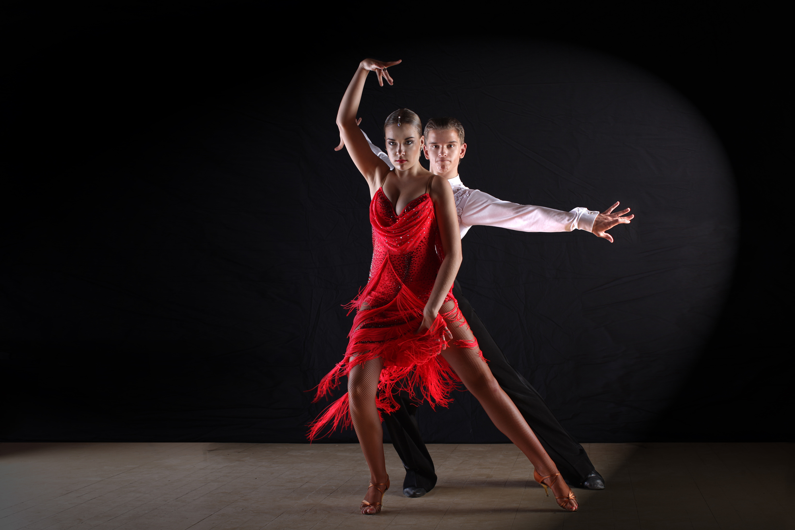

Клубные парные латиноамериканские танцы – это дискотечное направление, синтез африканских, испано-португальских и индейских танцев, который возник в 19-м веке на территории колониальной Америки. Ритмичные и веселые, страстные и чувственные, эти танцы мало кого оставят равнодушными! Они достаточно просты в обучении и доступны для всех, независимо от возраста, комплекции, уровня подготовки.

Самые популярные:
Сальса – дословно название танца переводится, как «соус», приправленный африканскими, испанскими и индейскими «специями». Родиной этого танца является Куба. Примерно в 70-х годах прошлого века именно там и начали танцевать сальсу.
Бачата – родиной этого танца, впрочем, как и одноимённого музыкального стиля, является Доминиканская Республика. Именно здесь, в годы правления Рафаэля Молины среди бедняков и нищих, находящих отдушину в танце, и зародилась бачата. «Музыка горечи» - так переводится это название. Бачата на фоне сальсы отличается более медленным темпом, а музыкальные произведения, под которые исполняется танец, повествуют чаще всего о неразделённой любви. Это невероятно нежный и чувственный танец, где партнёрша может по-настоящему ощутить себя желанной женщиной, а партнёр – сильным и доминирующим мужчиной.
Меренге – это национальный танец, появившийся в Доминикане и на Гаити. Согласно одним данным его истоки нужно искать на плантациях тростника, где рабы был прикованы друг к другу, а надзиратель барабанными ритмами регулировал их передвижение. Другая же версия гласит, что люди начали танцевать подобным образом, отдавая дань раненому в ногу герою революции.
Меренге - ритмичный, веселый и зажигательный танец, который легко учится и запоминается, двигаться в его ритме под силу даже начинающим танцорам.
Кизомба – в переводе с ангольского «вечеринка, праздник» - танец, который зародился в 80-х годах прошлого столетия на африканских просторах. Самый большой вклад в становление и развитие танца внесли страны Ангола и Кабо-Верде. Ангольская кизомба трюками и отдельными элементами похожа на сембу. Кизомба из Кабо-Верде или "passada" имеет много общего с мазуркой. Первый европейский фестиваль по кизомбе прошёл в 2009-м году в Варшаве. На сегодняшний день сложно найти страну, где бы ни танцевали кизомбу. Вирус этого танца активно распространяется по всему миру.
Мамбо - слово «мамбо» произошло от имени бога войны, которому на Кубе в далёком прошлом и был посвящён танец. А сейчас этот эажигательный танец, завоевал весь мир.